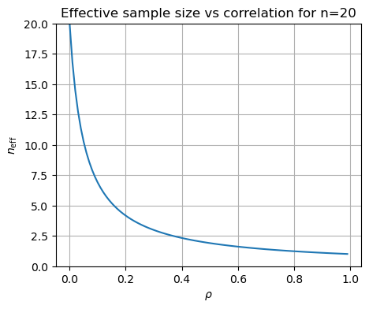

4.4. Expectation values and moments#
In this section we provide a brief introduction to expectation values and moments, summarizing the key discrete and continuous definitions. Warning: there are multiple notations in the literature for expectation values and moments! In Appendix A there are further details on Statistics concepts and notation, which includes Expectation values and moments and Central moments: Variance and Covariance.
We also address the question: Is a continuous PDF determined by its moments? and consider the effective number of samples when the data being sampled is correlated. For independent (and hence uncorrelated) samples, we expect new information with each sample. But this is not the case if there are strong correlations between samples!
Summary of expectation values and moments#
The expectation value of a function \(h\) of the random variable \(X\) with respect to its distribution \(p(x_i)\) (a PMF) or \(p(x)\) (a PDF) is
The \(p\) subscript is usually omitted. Moments correspond to \(h(x) = x^n\), with \(n=0\) giving 1 (this is the normalization condition) and the mean \(\mu\) by \(n=1\):
where we have also indicated two other common notations for the mean.
The variance and covariance are moments with respect to the mean for one and two random variables:
The standard deviation \(\sigma\) is simply the square root of the variance \(\sigma^2\). The correlation coefficient of \(X\) and \(Y\) (for non-zero variances) is
The covariance matrix \(\Sigma_{XY}\) is
Checkpoint question
Show that we can also write \(\sigma^2 = \mathbb{E}[X^2] - \mathbb{E}[X]^2\).
Answer
Make sure you can justify each step.
Checkpoint question
Show that the mean and variance of the normalized Gaussian distribution
are \(\mu\) and \(\sigma^2\), respectively.
Answer
Just do the integrals!
In doing these integrals, simplify by changing the integration variable to \(x' = x-\mu\) and use that the distribution is normalized (integrates to one) and that integrals of odd integrands are zero.
Covariance matrix for a bivariate (two-dimensional) normal distribution
With vector \(\boldsymbol{x} = \pmatrix{x_1\\ x_2}\), the distribution is
with mean and covariance matrix:
Note that \(\Sigma\) is symmetric and positive definite. See Section 5.1 for plotting what this looks like.
Checkpoint question
What can’t we have \(\rho > 1\) or \(\rho < -1\)?
Answer
The bounds on the correlation coefficient \(\rho\) arise from the Cauchy-Schwarz inequality, which says that if \(\langle\cdot,\cdot\rangle\) defines an inner product, then for all vectors \(\uvec,\vvec\) in the space, this inequality holds:
The expectation value of a random variable satisfies the conditions to be an inner product, so that the Cauchy-Schwarz inequality implies that
With \(U = X - \mu_{X}\) and \(V = Y - \mu_{Y}\), the inequality implies that
Dividing through by \(\sigma_X \sigma_Y\) yields \(-1 \leq \rho \leq 1\).
A consequence is that the matrix \(\Sigma\) would not be a valid covariance matrix because the determinant would be negative.
Is a continuous PDF determined by its moments?#
If we know some (or all) of the moments of a one-dimensional distribution \(p(x)\), how can we find the PDF? Let us define the moments \(m_k\) for integer \(k\) as
where \(S\) denotes the support of the PDF (e.g., \((-\infty,\infty)\) for a Gaussian or \([0,1]\) for a Beta distribution). So \(m_0 = 1\), the mean \(\mu\) is \(m_1\), the variance \(\sigma^2\) is \(m_2 - m_1^2\), and so on.
Note
We can generalize this discussion to multi-dimensional PDFs with vector \(\mathbf{x}\), for which the moments will have multiple indices and the defining expression will be integrated over the space of \(\mathbf{x}\).
Here are some ways to find \(p(x)\) given a set of moments \(\{m_k\}\):
If we know the PDF belongs to a particular parametric family, such as Gaussian or Beta (see 📥 Demo: Exploring PDFs), then we can solve for the defining parameters if we know the appropriate moments. For the case of a Gaussian, we know it is defined by its mean \(\mu\) and variance \(\sigma^2\), so those are the only two moments we need. (In fact, we can determine the mean and variance even if we only know higher moments!) This is also true for the less familiar case of a Beta distribution that is specified by the shape parameters \(\alpha, \beta > 0\) (see Beta distribution on Wikipedia). If the variance satisfies \(\sigma^2 < \mu(1-\mu)\), then
\[ \alpha = \mu \left(\frac{\mu(1-\mu)}{\sigma^2} - 1\right), \qquad \beta = (1-\mu) \left(\frac{\mu(1-\mu)}{\sigma^2} - 1\right). \]We can use a maximum entropy reconstruction. We a finite number of known moments, we choose among distributions that reproduce the moments the one with the largest entropy. See Section 11.3 to learn about the principle of maximum entropy and there is a demo notebook in Section 11.4 illustrating how to do a maximum entropy reconstruction from moments.
We can try to invert from a moment-generating function or a characteristic function. If \(X\) is a random number with distribution \(p_X(x)\), then the moment-generating function \(M_X(t)\) and characteristic function \(\phi_X(t)\) are for \(t\in\mathbb{R}\):
\[\begin{split}\begin{align*} M_X(t) &= \mathbb{E}[e^{tX}] = \sum_{k=0}^\infty \frac{t^k}{k!}\mathbb{E}[X^k] = \sum_{k=0}^\infty \frac{m_k}{k!} t^k \quad\Longrightarrow\quad M^{(k)}_X(0) = m_k , \\ \phi_X(t) &= \mathbb{E}[e^{itX}] = \sum_{k=0}^\infty \frac{(it)^k}{k!}\mathbb{E}[X^k] = \sum_{k=0}^\infty \frac{m_k}{k!} (it)^k \quad\Longrightarrow\quad \phi^{(k)}_X(0) = m_k , \end{align*}\end{split}\]where we have formally performed Taylor expansions and inverted the order of summation and expectation value (we’re assuming here that these are valid operations). The superscript \((k)\) means the \(k^{\text{th}}\) derivative. In integral form,
\[ M_X(t) = \int_{-\infty}^{\infty} e^{tx}\, p_X(x)\, dx, \qquad \phi_X(t) = \int_{-\infty}^{\infty} e^{itx}\, p_X(x)\, dx. \]So the moment-generating function is essentially a Laplace transform of the distribution, while the characteristic function is essentially a Fourier transform. As such, we can try to invert them to find \(p_X(x)\).
Note
We can derive immediately that for a Gaussian distribution with mean \(\mu\) and variance \(\sigma^2\),
(4.7)#\[ M_X(t) = \exp(\mu t + \frac{1}{2}\sigma^2 t^2) , \qquad \phi_X(t) = \exp(i\mu t - \frac{1}{2}\sigma^2 t^2) . \]We can use discrete quadrature reconstruction. In this case we approximate the PDF by a finite sum of \(n\) point masses (i.e., delta functions) with weights and locations chosen to reproduce the first \(n\) moments. That is, replace the continuous \(p(x)\) by the discrete \(p_N(x)\):
\[ p_N(x) = \sum_{i=1}^N w_i \delta(x-x_i), \qquad w_i \geq 0, \qquad \sum_{i=1}^N w_i = 1, \]where the \(x_i\) are nodes and the \(w_i\) are the weights, such that
\[ m_k \approx \sum_{i=1}^N w_i x_i^k . \]If \(K\) moments \(m_k\) for \(k = 0, 1, \ldots , K\) are known and the \(x_i\) are fixed, this is a linear problem in the weights \(w_i\). If both \(x_i\) and \(w_i\) are unknown, one has more flexibility. Under suitable conditions, \(2N−1\) moments can be exactly matched by an \(N\)-point discrete representation (so this is closely related to Gaussian quadrature).
In most, but not all, cases a PDF will uniquely be determined by a complete set of moments.
Correlations and the effective number of samples#
Consider \(n\) quantities \(y_1\), \(y_2\), \(\ldots\), \(y_n\), which individually are identically distributed with mean \(\mu_0\) and variance \(\sigma_0^2\), but with unspecified covariances between the \(y_i\). For concreteness we’ll say that the distribution of \(\yvec = (y_1, y_2, \ldots, y_n)\) is a multivariate Gaussian:
where \(\Sigma\) is an \(n\times n\) covariance matrix and \(\boldsymbol{1_n}\) is a \(n\)-dimensional vector of ones. Let us consider first the limits of uncorrelated and fully correlated Gaussians.
If we repeatedly draw \(y_1\) and \(y_2\) from the uncorrelated distribution, the joint distribution on a corner plot is 2-dimensional (in particular, the contours are circular). With \(n\) draws, the joint distribution is \(n\) dimensional (and the contours for the marginalized 2-dimensional plots are all circular). But the same analysis with the fully correlated distribution would yield a straight line for the \(n=2\) case; that is to say, 1-dimensional. Further, it is 1-dimensional for any \(n\). We can interpret this as meaning the effective number of draws or samples is \(n\) in the uncorrelated case and 1 in the correlated case.
Consider the average value of \(y_1, y_2, \ldots, y_n\) and the variance of that average. For convenience, define \(z\) as
Then if we make many draws of \(y_1\) through \(y_n\), the expectation values of each \(y_i\) is the same, namely \(\mu_0\), so the expectation value of \(z\) is
Now define \(\widetilde y_i = y_i - \mu_0\) and \(\widetilde z = z - \mu_0\), so that these new random variables are all mean zero (this is for clarity, not necessity). The variance of \(\widetilde z\) is then the expectation value of \(\widetilde z^2\), while \(\langle y_i^2 \rangle = \sigma_0^2\). All of the covariances with \(i\neq j\) are the same, which we will specify as \(\langle y_i y_j \rangle = \sigma_0^2 \rho\), with \(0 \leq \rho < 1\). Consider
for the two extremes of correlation. Since \(\langle\widetilde y_i \widetilde y_j\rangle\) either is zero or equals \(\sigma_0^2\), we find
where we have \(n\) nonzero terms in the uncorrelated case but \(n^2\) nonzero terms in the fully correlated case. Thus the standard deviation in the uncorrelated case decreases with the familiar \(1/\sqrt{n}\) factor, so the effective number of samples is \(n\). But in the fully correlated case the width is independent of \(n\): increasing \(n\) adds no new information, so the effective number of samples is one.
We can do the more general case by considering \(\yvec\) distributed as above with \(\Sigma = \sigma_0^2 M\), where \(M\) is the \(n\times n\) matrix:
with \(0 \leq \rho < 1\) (we assume only positive correlation here). So the two extremes just considered correspond to \(\rho =0\) and \(\rho = 1 - \epsilon\) (we introduce \(\epsilon\) as a small positive number to be taken to zero at the end, needed because otherwise the matrix \(M\) cannot be inverted). Then the variance of \(\widetilde z\) given \(\yvec\) is
We can get this result directly from (4.8) by noting there are \(n\) terms with \(i = j\) and \(n(n-1)\) terms with \(i \neq j\). So the variance is
Thus the effective number of degrees of freedom is
This also follows from the Fisher information matrix.
For \(n=20\), \(n_{\text{eff}}\) looks like:
